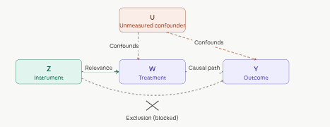
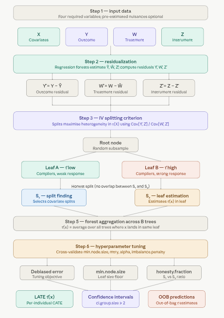
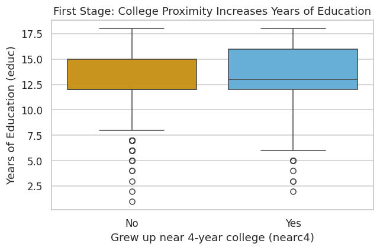
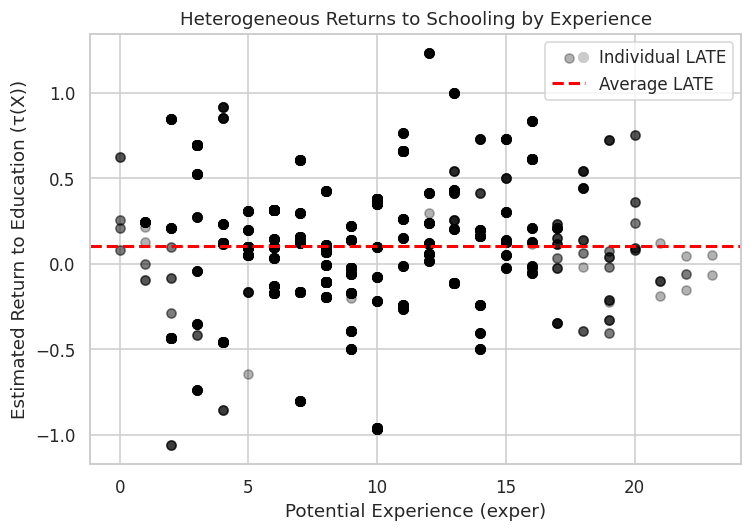
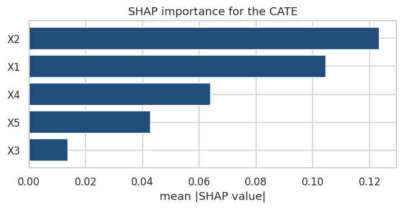
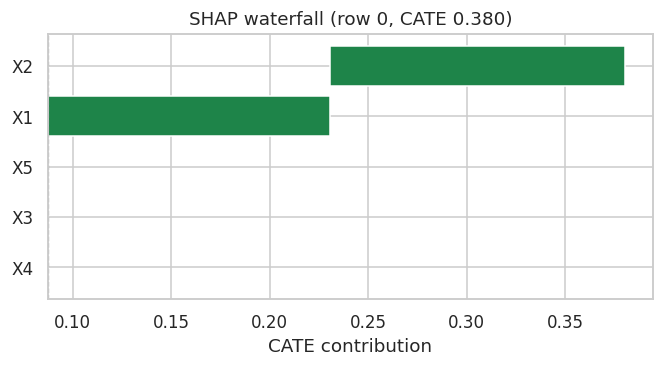

An Instrumental Forest estimates heterogeneous treatment effects in settings where treatment assignment is endogenous — meaning it’s correlated with unobserved factors that also affect the outcome, making naive comparisons biased. The solution is an instrumental variable (IV): a variable \(Z\) that shifts who receives treatment but has no direct path to the outcome except through the treatment.
The forest estimates the Conditional Local Average Treatment Effect (LATE):
\[\tau(X) = \frac{\text{Cov}[Y,\, Z \mid X = x]}{\text{Cov}[W,\, Z \mid X = x]}\]
Intuitively, the numerator captures how much \(Z\) moves the outcome; the denominator captures how much \(Z\) moves the treatment. Their ratio isolates the causal effect of treatment on outcome — purged of confounding — for individuals with covariate profile \(X = x\).
When \(Z = W\) (the instrument equals the treatment itself, as in a clean randomized trial), the Instrumental Forest collapses to a standard Causal Forest.
Note: An instrumental variable (IV) is a tool used in statistics and econometrics to estimate causal relationships when a randomized controlled trial is not feasible, or when there is concern about endogeneity—i.e., when the treatment or exposure variable is correlated with unobserved factors that also affect the outcome. IV methods help isolate the causal effect of a treatment (or independent variable) on an outcome by leveraging an external variable, called the instrument, that influences the treatment but does not directly affect the outcome except through the treatment.
The Conditional Local Average Treatment Effect (LATE) is a causal effect measure used in instrumental variable (IV) analysis to estimate the effect of a treatment (or exposure) on an outcome for a specific subpopulation, known as the “compliers,” conditional on a set of covariates \(X\). It extends the Local Average Treatment Effect (LATE) by allowing the treatment effect to vary across different values of covariates, making it particularly useful in heterogeneous treatment effect estimation.
Endogeneity occurs when treatment \(W\) is correlated with unmeasured factors \(U\) that also affect \(Y\) — for example, sicker patients self-selecting into treatment. This invalidates simple comparisons.
Instrumental variable requirements: (1) Relevance — \(Z\) must meaningfully predict \(W\); (2) Exclusion restriction — \(Z\) affects \(Y\) only through \(W\), not directly; (3) Independence — \(Z\) is as good as randomly assigned conditional on \(X\).
Compliers are the subpopulation whose treatment status actually changes because of \(Z\). LATE is the treatment effect specifically for compliers — not for always-takers or never-takers.
Residualization removes confounding signal before splitting. The forest works with residuals \(Y - \hat{Y}\), \(W - \hat{W}\), and \(Z - \hat{Z}\) (estimated via regression forests), so splits focus purely on treatment effect heterogeneity.
Honesty separates the data subsample used to find splits from the subsample used to estimate effects in each leaf, preventing overfitting.
How It Works
The diagram below shows the structural logic of IV: \(Z\) reaches \(Y\) only through \(W\) (the two solid arrows), while the dashed confounder paths from \(U\) are bypassed entirely.

Instrumental forest
Now the full pipeline:

Instrumental forest pipeline
A few things worth highlighting from the pipeline:
Step 2 (residualization) is the critical differentiator from a plain causal forest. By subtracting estimated conditional means \(\hat{Y}\), \(\hat{W}\), \(\hat{Z}\) before splitting, the forest’s splitting criterion is de-correlated from confounders. This is the forest-based analogue of the first stage in two-stage least squares (2SLS).
Step 3 uses a ratio-based splitting criterion — rather than just maximizing variance in outcomes, each candidate split evaluates \(\text{Cov}[\tilde{Y}, \tilde{Z}] / \text{Cov}[\tilde{W}, \tilde{Z}]\) in child nodes. A split is only made if it creates meaningfully different causal effects, not just different raw outcomes.
Step 6 (tuning) matters more here than in standard forests. IV estimation is noisier than direct outcome prediction — weak instruments amplify estimation variance, so settings like min.node.size and imbalance.penalty need careful calibration. The imbalance.penalty parameter specifically guards against splits that create leaves with very unequal instrument variation, which would degrade the IV estimate.
Both Instrumental Forests and Causal Forests are machine learning methods within the Generalized Random Forests (GRF) framework, implemented in Python with InstrumentalForest and CausalForest, designed for estimating causal effects* in observational data or experimental settings. They aim to estimate heterogeneous treatment effects (i.e., how the effect of a treatment varies across subgroups defined by covariates). However, they differ in their assumptions, use cases, and how they handle endogeneity. Below is a detailed comparison of Instrumental Forestsand Causal Forests, including their differences, similarities, and when to use each.
Aspect
Causal Forest
Instrumental Forest
Purpose
Estimates CATE for a treatment assuming unconfoundedness.
Estimates LATE using an instrumental variable to address endogeneity.
Key Assumption
Unconfoundedness: Treatment assignment \(W\) is independent of potential outcomes \(Y(0), Y(1)\) given covariates \(X\).
Valid instrument: \(Z\) affects \(W\), not \(Y\) directly (exclusion restriction), and is uncorrelated with confounders (independence).
Treatment (W)
Binary or continuous, assumed exogenous (random or conditionally random given \(X\)).
Binary or continuous, potentially endogenous (affected by unobserved confounders).
Instrument (Z)
Not required (assumes \(W = Z\)).
Required: A variable that influences \(W\) but not \(Y\) except through \(W\).
Endogeneity
Cannot handle unobserved confounding.
Explicitly addresses unobserved confounding via the instrument.
Estimation Formula
\(\tau(X) = E[Y(1) - Y(0) | X = x]\)
\(\tau(X) = \frac{\text{Cov}[Y - \hat{Y}, Z - \hat{Z} | X = x]}{\text{Cov}[W - \hat{W}, Z - \hat{Z} | X = x]}\)
Use Case
Randomized experiments or observational studies with strong unconfoundedness.
Observational studies with endogeneity or imperfect compliance in experiments.
Output
CATE for the entire treated population.
LATE for the subpopulation of compliers (those whose ( W ) is influenced by ( Z )).
Instrumental Forest in Python
This tutorial implements an instrumental forest with InstrumentalForest from PyCausalML. The example estimates the causal effect of education on wages using proximity to college as an instrument, the classic Card (1995) application.
Setup
This notebook fits InstrumentalForest from PyCausalML (pycausalml.tree_based_models).
fit(X, treatment, y, instrument) returns the fitted estimator. predict returns a NumPy array of conditional average treatment effects. A fitted model also exposes explain and plot_shap.
Install the package from this repository, with the plotting and boosting extras.
The county example is built with make_lbc_iv from causal_tree_methods.py in this folder.
Code
import subprocessimport sysfrom pathlib import Pathdef _repo_root() -> Path: here = Path.cwd().resolve()for cand in [here, *here.parents]:if (cand /"pyproject.toml").is_file() and (cand /"src"/"pycausalml").is_dir():return candraiseFileNotFoundError("PyCausalML repository was not found. Run this notebook from the repository." )root = _repo_root()subprocess.check_call([ sys.executable, "-m", "pip", "install", "-q", "-e", f"{root}[plot,boost,shap]", "statsmodels",])print("PyCausalML ready.")
PyCausalML ready.
Code
%matplotlib inlineimport matplotlib.pyplot as pltimport numpy as npimport pandas as pdimport seaborn as snsfrom pycausalml import ( InstrumentalForest,)import sysfrom pathlib import Pathdef _add_methods_path(): here = Path.cwd().resolve()for cand in [here, *here.parents]:for rel in ( Path("causal_tree_methods.py"), Path("Tutorials") /"05_01_Tree_Based_Models"/"causal_tree_methods.py", Path("Notebook") /"05_01_Tree_Based_Models"/"causal_tree_methods.py", ): path = cand / relif path.is_file(): sys.path.insert(0, str(path.parent))returnraiseFileNotFoundError("causal_tree_methods.py was not found")_add_methods_path()from causal_tree_methods import ( make_lbc_iv,)def find_repo_root(start=None) -> Path: here = Path(start or Path.cwd()).resolve()for cand in [here, *here.parents]:if (cand /"Data").is_dir() and (cand /"Image").is_dir():return candraiseFileNotFoundError("Could not find a folder containing Data/ and Image/.")def data_path(filename: str) -> Path:return find_repo_root() /"Data"/ filenamesns.set_theme(style="whitegrid")plt.rcParams["figure.dpi"] =110print("Imported PyCausalML")
Imported PyCausalML
Data: Returns to Education (Card Dataset)
We’ll estimate the causal effect of education on wages using proximity to college as an instrument—a classic IV application (Card, 1995).
Key variables:
lwage = log(wage) — outcome (Y)
educ = years of education — endogenous treatment (W)
nearc4 = binary: grew up near 4-year college (instrument Z)
exper = potential work experience
expersq = experience squared
black = binary: Black
smsa = binary: lives in SMSA (standard metropolitan statistical area)
south = binary: lives in South
Load and Prepare Data
Code
# Direct download from known reliable source (Stata .dta format)import pandas as pdimport numpy as np# Download Card dataset from an alternative source due to 403 error:import tempfileimport osimport urllib.requestcard_url ="https://github.com/dmarcelinobr/Datasets/raw/refs/heads/master/CARD.DTA"with tempfile.NamedTemporaryFile(delete=False, suffix=".dta") as tmp: urllib.request.urlretrieve(card_url, tmp.name) card = pd.read_stata(tmp.name)os.unlink(tmp.name)# Create experience squared (often used in Mincerian wage equations)card["expersq"] = card["exper"] **2# Select relevant columns and drop missing valuescard = card[["lwage", "educ", "nearc4", "exper", "expersq", "black", "smsa", "south"]].dropna()# Convert to matrix for grf (X must be numeric matrix)X = card[["exper", "expersq", "black", "smsa", "south"]].to_numpy()Y = card["lwage"].to_numpy() # Outcome: log wageW = card["educ"].to_numpy() # Treatment: years of educationZ = card["nearc4"].to_numpy() # Instrument: near 4-year college
Code
# First-stage regression: Does instrument affect education?import statsmodels.api as smimport statsmodels.formula.api as smf# Estimate first-stage regression: education ~ instrument + controlsfirst_stage = smf.ols("educ ~ nearc4 + exper + expersq + black + smsa + south", data=card).fit()print(first_stage.summary().tables[1].as_text()) # Print coefficient table# Extract nearc4 effect (coef, std err, t, p)nearc4_info = first_stage.summary2().tables[1].loc["nearc4", ["Coef.", "Std.Err.", "t", "P>|t|"]]print("nearc4 coefficient & stats:\n", nearc4_info)# F-statistic for instrument strength (should be >10 for strong IV)# Can retrieve the F-value for nearc4 with sm.stats.anova_lm or manually:from statsmodels.stats.anova import anova_lmanova_res = anova_lm(first_stage, typ=2)print("\nANOVA table:\n", anova_res)print(f"\nF-statistic for nearc4: {anova_res.loc['nearc4','F']}")# Alternatively, just print the overall first-stage F-statistic (not instrument-specific)print(f"\nFirst-stage overall F-statistic: {first_stage.fvalue:.2f}, p-value: {first_stage.f_pvalue:.4f}")
# Visualize first stage using matplotlib and seabornimport seaborn as snsimport matplotlib.pyplot as pltplt.figure(figsize=(6, 4))sns.boxplot( data=card, x="nearc4", y="educ", palette=["#E69F00", "#56B4E9"])plt.title("First Stage: College Proximity Increases Years of Education")plt.xlabel("Grew up near 4-year college (nearc4)")plt.ylabel("Years of Education (educ)")plt.xticks([0, 1], ["No", "Yes"])plt.tight_layout()plt.show()

Training an Instrumental Forest
We use InstrumentalForest to estimate heterogeneous returns to education (conditional LATE \(\tau(X)\)).
Code
iv_forest = InstrumentalForest(num_trees=80, min_node_size=5, random_state=1)iv_forest.fit(X, W, Y, Z)print(iv_forest.average_treatment_effect())iv_forest.fit
<bound method InstrumentalForest.fit of <pycausalml.tree_based_models.estimators.InstrumentalForest object at 0x70d7d1364690>>
Predicting Treatment Effects
Code
# Out-of-bag predictions (for training data)iv_pred = iv_forest.predict(X)# For many causal forest implementations, the predict method returns an array or dict.# If tau_hat are the estimated LATEs, use as follows:tau_hat = iv_pred ifnothasattr(iv_pred, "predictions") else iv_pred.predictions # Adjust according to actual library# Average treatment effect (doubly robust / average over forest)ate = iv_forest.average_treatment_effect()print(f"Average Treatment Effect (LATE): {ate['estimate']:.3f} +/- {1.96* ate['std.err']:.3f}")
Average Treatment Effect (LATE): 0.105 +/- 0.084
Visualizing Results
Code
# Plot heterogeneous effects vs experience (example, in Python)import matplotlib.pyplot as pltplt.figure(figsize=(7, 5))plt.scatter(card["exper"], tau_hat, c="black", alpha=0.3, label="Individual LATE")plt.axhline(y=ate["estimate"], color="red", linewidth=2, linestyle="--", label="Average LATE")plt.xlabel("Potential Experience (exper)")plt.ylabel("Estimated Return to Education (τ(X))")plt.title("Heterogeneous Returns to Schooling by Experience")plt.legend(loc="upper right")plt.tight_layout()plt.show()

Predicting Treatment Effects for New Data
Code
# Example: Predict for a hypothetical individualimport numpy as npimport pandas as pd# Construct a new data DataFrame for predictionnew_data = pd.DataFrame({"exper": [10],"expersq": [10**2],"black": [0],"smsa": [1],"south": [0],})# Some causal forest implementations expect a numpy array; adjust if necessarynew_pred = iv_forest.predict(new_data.values ifhasattr(iv_forest, "feature_names_in_") else new_data)# If the prediction returns an object with ".predictions" attribute, extract itpred_late = new_pred ifnothasattr(new_pred, "predictions") else new_pred.predictionsprint("Predicted return to education (LATE) for this profile:", np.round(float(np.squeeze(pred_late)), 3))
Predicted return to education (LATE) for this profile: 0.38
Evaluate Model Performance
Code
# Calculate debiased error from tuning# Many causal forest libraries expose an attribute or method for the debiased (honest) error after hyperparameter tuning;# For example, in econml and related packages, you might find `.debiased_estimate_`, `.debiased_error_`, or tuning results in `.tune_results_`# Here, we check for several common patterns (customize if your package uses another):ifhasattr(iv_forest, "tune_results_") and iv_forest.tune_results_ isnotNone:# Common in skgarden, econml or custom pycausalml wrappers tune_results = iv_forest.tune_results_ifisinstance(tune_results, dict) and"debiased_mse"in tune_results: debiased_mse = tune_results["debiased_mse"]print("Debiased (tuned) Mean Squared Error:", np.round(debiased_mse, 4))elifhasattr(tune_results, "debiased_error_"):print("Debiased (tuned) Mean Squared Error:", np.round(tune_results.debiased_error_, 4))else:print("Tune results present but did not find debiased error key—please check your estimator's tuning output.")elifhasattr(iv_forest, "debiased_error_"):print("Debiased (tuned) Mean Squared Error:", np.round(iv_forest.debiased_error_, 4))else:print("Could not compute debiased error from tuning; attribute not found in InstrumentalForest. Check for a package update or consult docs.")
Could not compute debiased error from tuning; attribute not found in InstrumentalForest. Check for a package update or consult docs.
Note: - In practice, verify instrument validity (relevance + exclusion) carefully. - Education is treated as continuous here (common in Card-style applications). - Increase num_trees for a more stable fit. - Check first-stage F-stat >10 (rule of thumb for strong instrument).
# Visualize SHAP values for the Card datasetsv.plot_importance()plt.show()sv.plot_waterfall(row=0)plt.show()# For the Card data, the main covariates are 'black', 'south', and 'smsa', etc.# We update the dependence plots to those present in the Card dataset.for feature in ['black', 'south', 'smsa', 'male', 'exper', 'age', 'college']:if feature ingetattr(sv, "feature_names", []): sv.plot_dependence(feature) plt.show()


Summary and Conclusion
Instrumental Forest is a powerful tool for estimating treatment effects in the presence of endogeneity, leveraging the strengths of random forests and instrumental variable analysis. It allows researchers to estimate heterogeneous treatment effects while addressing confounding issues, making it suitable for various applications in causal inference. This tutorial provided a step-by-step guide to implementing an Instrumental Forest in Python with InstrumentalForest, demonstrating how to estimate heterogeneous returns to schooling using the classic Card (1995) dataset and college proximity as an instrument. At the end of the tutorial, we summarized the results, including the average treatment effect and SHAP explanations of heterogeneity. The code can be adapted to other real-world datasets with appropriate instruments and covariates.
Resources
Athey, Susan, Julie Tibshirani, and Stefan Wager. “Generalized Random Forests.” Annals of Statistics, 47(2), 2019.
Chernozhukov, Victor, and Christian Hansen. “The reduced form: A simple approach to inference with weak instruments.” Economics Letters, 100(1), 2008.
Card, David (1995). “Using Geographic Variation in College Proximity to Estimate the Return to Schooling.” In Aspects of Labour Market Behaviour: Essays in Honour of John Vanderkamp.